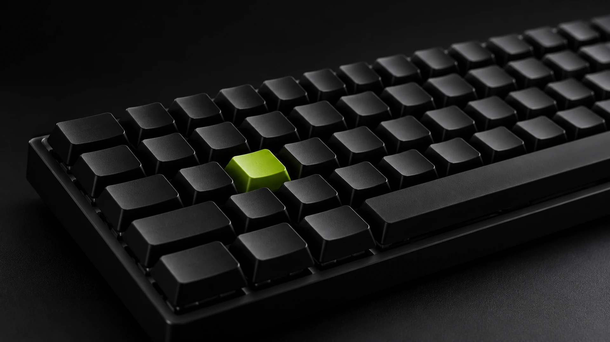

Changelog · Oct 14
Edge builds in every region
Builds now run next to the region they deploy to.
components/cards.html
Carbon surfaces with a 1px hairline and 12px corners. No glow, no drop shadow on cards that sit on the page.
Feature cards
Mono kicker, Medium title, Fog text. Three across on desktop, one on mobile.
KRN-201
Triage in one pass
New reports land in one queue with owner, priority and duplicate hints already filled.
How triage worksKRN-202
Deploys linked to issues
Every merge shows which issues it closes and which environment it reached.
See the deploy logKRN-203
Alerts with an owner
Error spikes open an issue for the team that shipped the change.
Read about alertsMedia card and capsule
Photos sit inside the same 12px frame. The capsule floats over a photo with a blurred Void fill.
Changelog · Oct 14
Edge builds in every region
Builds now run next to the region they deploy to.

Metric cards
One big Medium number, a Fog caption, no chart chrome.
42 s
Median build time
99.98%
Deploy success rate, last 30 days
3.1 h
Median time from report to fix